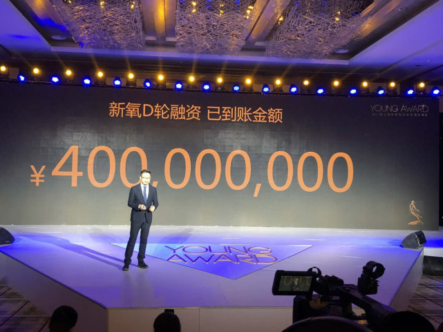

“当你好看的时候，发现身边好人都多了”
这是今年医美APP平台新氧主张女性做出“勇敢改变”的一句宣传标语，也是构建在颜值经济基础上的医美产业及其拥趸者的信仰。
一、颜值经济当道，医美消费迅增
这个时代对颜值的崇拜似乎赋予了变美无与伦比的正当性，同时人们不再只满足于活在美颜相机中，希望自己在现实中也能光彩照人。各类整形项目推荐与用户的整形日记各占据了新氧、更美等医美APP的半壁江山。在新氧上，每天有上千篇日记被分享至社区，而被推荐到首页的日记，动辄有上千条评论与十万次以上的点击。那些美女们并不介意剖出自己整容前后的照片给大家观看、评论，这是她们一路“变美”或是“逆袭”的见证，她们甚至不介意周围的人知道她们整容，反而更多的人因受到她们的影响而接触医美。
(图：医美APP新氧宣传海报)
医美早已称不上是一个小众的产业，新氧公众号在新榜近50万公众号中排名稳定在二十几名，微博大V整形医生修志夫有280万粉丝。事实上，医美产业的火爆从网红经济崛起时就开始了，2017年更是它如日中天的一年：普通消费者开始取代明星、网红成为消费主力，在线医美平台悦美与新氧分别获得了C轮与D轮融资，中国也成了仅次于美国的全球第二大医美市场。

(图：新氧近日完成4亿D轮融资)
“想跟玻尿酸谈一场永远不分手的恋爱。”当我们找到poa（化名）时，她刚在自己的新氧发表栏里更新了这则状态。
poa，24岁，新氧北京用户，从2016年4月接触微整，到2017年12月，她前后完成了包括玻尿酸丰眉弓、垫下巴等五个微整形项目，并依借着及时分享和回复积聚了80000+新氧粉丝。

和很多其他接触了玻尿酸的女孩一般，如今poa的生活已经离不开玻尿酸，除了不断尝试把玻尿酸打在自己还不够满意的部位，她也要不断补打玻尿酸来维持效果。
玻尿酸的正式名称是透明质酸（hyaluronic acid），1934年由美国哥伦比亚大学眼科教授Meyer等首先从牛眼玻璃体中分离出来，目前在临床上玻尿酸主要被用于眼科手术的粘弹液以及退化性关节炎的治疗。
在医疗美容领域，玻尿酸几乎是接受度最高也最受欢迎的微整项目之一，它的主要功能是去皱、填充、塑形，可以用于丰太阳穴、丰眉弓、隆鼻、卧蚕、下巴等多个部位。由于人体自身含有一定的玻尿酸，因此被认为“可以被人体自身代谢”，玻尿酸的效果不是永久的，一般注射一次可以维持6-10个月。
“打完下巴后，虽然感觉到吸收了一些，但是形状依然是歪的，不对称而且感觉特别硬，几个绿豆大小的硬块在下巴上，当时太不满意了，太郁闷了！”poa第一次打玻尿酸的回忆并不算美好，但如今的她俨然已经是个玻尿酸小达人，整容这条路并不好走，她定期会在新氧上直播或发布日记，希望通过分享自己的经历和心路历程，能够或多或少帮助到粉丝。